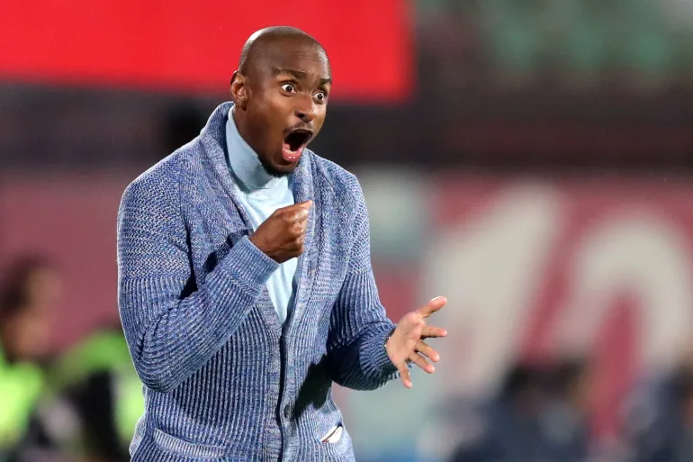

Rulani collets six points in 5 games at Wydad
Rulani Mokwena's appointment as head coach of Wydad Casablanca was met with significant anticipation.
Known for his tactical acumen and previous successes in South African football, many believed he would bring a fresh perspective to one of Africa's most storied clubs.
However, the early stages of his tenure have been anything but smooth, with the team garnering only six points from their first five matches in the league.
A Rocky Start
Wydad's season began with high expectations, but the reality on the pitch has been disappointing. Six points from five matches is far from the standard expected at a club of Wydad's stature, which boasts a rich history and a passionate fanbase.
The team’s struggles have raised questions about tactics, player selection, and overall morale.
Orlando Pirates Break Transfer Record: Mofokeng Sold to Liverpool for R120 Million

In a landmark move that has sent shockwaves through South African football, Orlando Pirates have officially announced the sale of their star midfielder, Mofokeng, to Liverpool FC for a staggering R120 million. This transfer not only marks a significant achievement for the club but also sets a new record for South African football, breaking previous benchmarks for player sales. A Historic Transfer The deal, finalized just days after Mofokeng's standout performance in the final against Stellenbosch, showcases the player’s rapid ascent in the football world. His contributions throughout the season, highlighted by his exceptional skills, vision, and tactical awareness, caught the eye of several international clubs, but it was Liverpool that ultimately secured his signature. Mofokeng's transfer fee of R120 million is a monumental achievement for South African football, illustrating the growing recognition and valuation of talent emerging from the continent. This sale not only elevates Mofokeng's career but also sets a new standard for future transfers involving South African players.